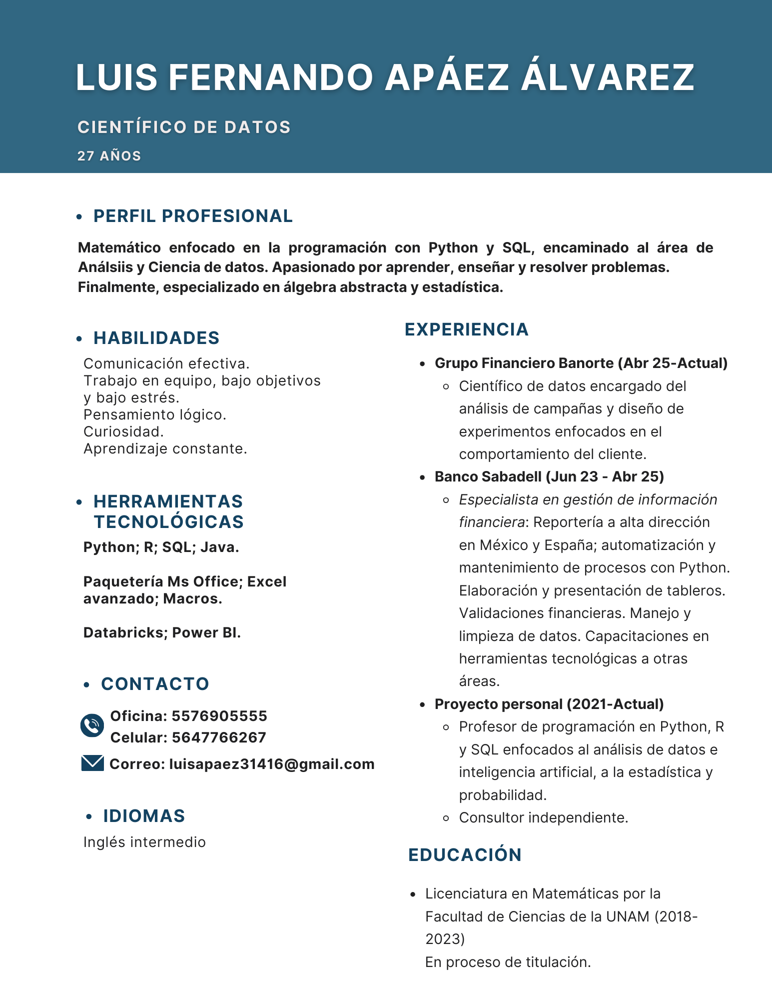

Mi CV

Perfil Profesional
Apasionado por los datos, con experiencia en análisis estadístico, modelado predictivo y visualización. Interesado en aplicar ciencia de datos para resolver problemas reales y generar impacto en decisiones de negocio.
Habilidades Técnicas
- Python (Pandas, NumPy, Scikit-learn, Matplotlib, Seaborn, Keras, Tensorflow)
- SQL y manejo de bases de datos relacionales. Diagramas estrella, copo de nieve, etc.
- Power BI y Tableau
- Machine Learning, Deep Learning y NLP
- Estadística aplicada, Álgebra abstracta y Probabilidad
Profesor
- Cursos de Matemáticas nivel preparatoria
- Cursos propedéuticos Facultad de Ciencias de la UNAM
- Cursos de programación:
- Python Básico, Intermedio y Avanzado
- Curso de Estadística y Machine Learning
- SQL básico e intermedio
- Excel básico, intermedio y avanzado
- Curso introductorio de R
- 💎 Curso de introducción a la programación enfocado al mundo laboral 💎
Contacto
Email: luisapaez31416@gmail.com